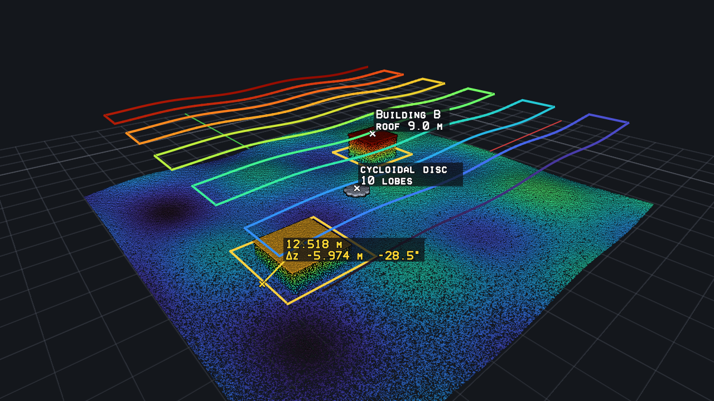
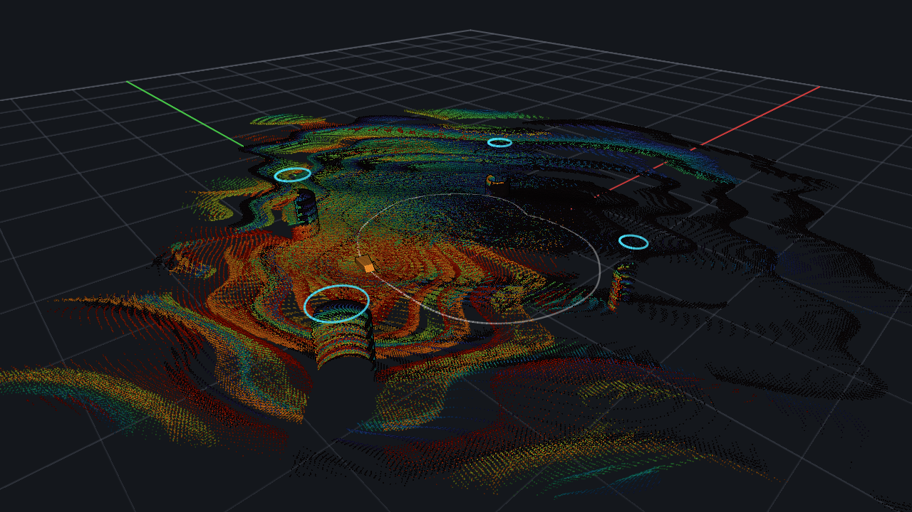

SpatialRender.jl
A native OpenGL renderer for meshes, LiDAR point clouds, GIS vector layers and trajectories in one scene, for diagnostic views in robotics and aerial systems. No browser, no plotting stack: GLFW + OpenGL 4.1 core, interleaved vertex buffers uploaded straight from Julia arrays, and a GPU-free core (ingestion, local frames, filters, BVH / k-d tree, culling, picking, camera) that runs and tests headless.


examples/demo.jl (top): a cycloidal-drive disc (CAD), 480k LiDAR points after outlier removal, GIS parcels reprojected from lon/lat into ENU, and a UAV survey trajectory colored by time. examples/live.jl (bottom): a rover streaming a simulated LiDAR, points colored by scan age.
New here? Start with the tutorials: five short walk-throughs whose code runs on every documentation build.
Installation
using Pkg
Pkg.add("SpatialRender")Quick start
using SpatialRender
scene = Scene()
load!(scene, "scan.las") # first georeferenced file sets the local frame
load!(scene, "boundaries.geojson") # reprojected into the same frame
add!(scene, load_stl("bracket.stl"; scale = 1e-3)) # mm CAD → m
open_viewer(scene)julia -t auto --project=. examples/demo.jl # interactive
julia -t auto --project=. examples/demo.jl shot.png # offscreen screenshot
julia -t auto --project=. examples/live.jl # rover + streaming LiDAR
julia -t auto --project=. examples/octree.jl big.las # out-of-core survey
julia -t auto --project=. examples/replay.jl my_bag/ # replay a ROS 2 bag (no argument: demo bag)What is in the box
| Stage | Implementation |
|---|---|
| Ingestion | Binary/ASCII STL, OBJ (native); LAS 1.0–1.4, point formats 0–10, via Mmap with threaded decoding (5M points ≈ 0.06 s); LAZ through laszip from LAStools_jll (installed automatically); GeoJSON; trajectories from positions or lon/lat/alt |
| Local frames | ENUFrame(lat, lon, h) (WGS84 → ECEF → ENU in Float64), OffsetFrame for UTM/projected data. GPU data is Float32 offsets near the origin, so no precision loss |
| Preprocessing | Statistical and radius outlier removal, voxel downsampling, RANSAC ground plane (remove / keep / classify), crop box, composable with |>; AttributeOutlierFilter (z-score, IQR, MAD, Hampel) via the KaosCleaner engine |
| Indexing | Binned-SAH BVH for meshes (allocation-free ray casts). Point clouds are reordered in place into contiguous k-d tree chunks, which also answer k-NN and radius queries, so the index costs one entry per chunk rather than per point |
| Culling + LOD | Frustum culling of chunks into two pre-allocated Int32 arrays (first, count) that feed glMultiDrawArrays directly. Points are shuffled inside each chunk, so drawing a shorter prefix gives a uniform subsample. Culling 5M points takes ~8 µs per frame and allocates nothing |
| GPU | Interleaved PointVertex (20 B: position, RGBA, 16-bit intensity, class, flags; no padding), MeshVertex (32 B: position, normal, uv), per-instance LineVertex. These isbits layouts go to glBufferData without repacking, with every attribute 4-byte aligned |
| Shaders | Points: pixel- or world-sized round splats colored by height / intensity / ASPRS class / RGB (Turbo map). Meshes: Blinn-Phong headlight, hemisphere ambient, two-sided, wireframe overlay. Lines: screen-space, anti-aliased, near-plane clipped instanced ribbons |
| Shader tooling | Programs cached per context by source hash; validate_shaders() checks every stage with glslangValidator from glslang_jll (CI, no GPU) or the live driver |
| Camera | Quaternion camera, turntable orbit (pitch-clamped), pan, zoom, fly mode, frame-all, top view, ortho toggle, pick-to-pivot |
| Poses | Every layer has a pose (set_pose!(layer, position, Quat) or a 4×4 matrix). Moving a layer is one uniform update; culling, LOD and picking run in the layer's own frame |
| Live data | StreamingPointCloud ring buffer: push_scan!(layer, points; pose) from any thread or task. Only dirty ranges are uploaded (glBufferSubData), nothing is re-indexed, and memory stays bounded. Optional coloring by scan age |
| Out-of-core | build_octree(las, dir) converts in streaming passes; peak RAM is one bucket (~4M points by default), not the survey. Nodes split only along long axes, so flat surveys become quadtrees. OctreeCloud streams nodes by screen size within a point budget, on a background thread, with LRU eviction. Point sizes adapt per node octant, so coarse areas still read as continuous surfaces |
| Bag replay | Native MCAP / rosbag2 reader, ROS 2 message decoding, TF frame tree, timeline player with seek and speed control, status overlay |
| Eye-dome lighting | Screen-space log-depth shading on points and meshes (B toggles it) |
| Annotations | Labels (annotate!) and measurements (measure!: distance, Δz, slope) in an original stroke font, so no font files are needed; measure mode in the viewer |
| Output | Interactive window; snapshot (shown inline in notebooks), render_offscreen / screenshot to PNG (zlib from Julia's own Zlib_jll) for CI and reports |
Tested against real-world data
Besides the unit tests, the readers were checked against public test data:
| Data | Source | Result |
|---|---|---|
| 416 MCAP files covering every combination of chunking, indexes, padding, repeated records and summary sections | Foxglove's MCAP conformance suite | all decode to the expected messages, channels and schemas |
| rosbag2 recordings, including split bags of 3 and 5 files | the rosbag2 project's test resources | message counts match each bag's metadata.yaml |
| 33 LAS files: versions 1.0–1.4, point formats 0–3, 6 and 7, extra bytes, many VLRs, deliberately broken files | PDAL's test data | identical to LasIO.jl on every point where LasIO can read the file (positions within 0.12 mm); the header bounds agree elsewhere |
| ASCII and binary STL (the same parts in both encodings), OBJ with normals and UVs | three.js examples | both encodings give identical triangles |
| 20 GeoJSON files with nulls, BOMs, collections and invalid JSON | GDAL's test data | geometry counts match an independent count |
| A 25-minute, 1.3 GB recording from an autonomous shuttle bus: 9 LiDAR topics (Velodyne VLP-16, localisation and safety scanners), 4 odometry sources, GNSS and TF | nUWAy2 (MIT) | all 70 topic counts match metadata.yaml; every point cloud decodes in four real field layouts; scans placed via TF register scan to scan (no convention error: the inverse transform fits 9× worse) |
The shuttle recording showed what real logs look like: /tf_static not recorded (sensor frames missing from TF), odometry in an unconnected odom frame, recording gaps of several minutes, heavily throttled LiDAR topics and data captured in bursts. The player handles each of these (see the replay section); the fixes are listed in the CHANGELOG.
Limits
- STEP / IGES are B-rep CAD, not meshes; tessellate them to STL/OBJ first (FreeCAD or OpenCASCADE).
load_meshsays so instead of failing obscurely. - Projected GIS layers need an
OffsetFrame, or reprojection to EPSG:4326 for anENUFrame. There is no PROJ dependency. - Bag replay decodes ROS 2 (CDR) messages only. ROS 1 messages inside MCAP are skipped, and rosbag2 SQLite (
.db3) bags needros2 bag convertto MCAP first. Big point clouds are decoded on the render thread, so very large scans at high rates can lower the frame rate during playback. - The GNSS overlay assumes the fixed frame's x/y axes point east/north.
- The backend is OpenGL 4.1 core (the newest macOS supports), not WebGPU. Rendering is isolated in
src/render/, so another backend can replace it without touching the core.